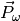
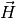
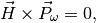

 can be time-independent.
Regarding the discussion in Pictures, we know immediately that  is aligned or anti-aligned with since

as is time-independent.
Anyway the equation we need to solve is then
System Message: WARNING/2 (\vec )
latex exited with error [stdout] This is pdfTeX, Version 3.14159265-2.6-1.40.15 (TeX Live 2014) (preloaded format=latex) restricted \write18 enabled. entering extended mode (./math.tex LaTeX2e <2014/05/01> Babel <3.9k> and hyphenation patterns for 78 languages loaded. (/usr/local/texlive/2014/texmf-dist/tex/latex/base/article.cls Document Class: article 2007/10/19 v1.4h Standard LaTeX document class (/usr/local/texlive/2014/texmf-dist/tex/latex/base/size12.clo)) (/usr/local/texlive/2014/texmf-dist/tex/latex/base/inputenc.sty (/usr/local/texlive/2014/texmf-dist/tex/latex/ucs/utf8x.def)) (/usr/local/texlive/2014/texmf-dist/tex/latex/ucs/ucs.sty (/usr/local/texlive/2014/texmf-dist/tex/latex/ucs/data/uni-global.def)) (/usr/local/texlive/2014/texmf-dist/tex/latex/amsmath/amsmath.sty For additional information on amsmath, use the `?’ option. (/usr/local/texlive/2014/texmf-dist/tex/latex/amsmath/amstext.sty (/usr/local/texlive/2014/texmf-dist/tex/latex/amsmath/amsgen.sty)) (/usr/local/texlive/2014/texmf-dist/tex/latex/amsmath/amsbsy.sty) (/usr/local/texlive/2014/texmf-dist/tex/latex/amsmath/amsopn.sty)) (/usr/local/texlive/2014/texmf-dist/tex/latex/amscls/amsthm.sty) (/usr/local/texlive/2014/texmf-dist/tex/latex/amsfonts/amssymb.sty (/usr/local/texlive/2014/texmf-dist/tex/latex/amsfonts/amsfonts.sty)) (/usr/local/texlive/2014/texmf-dist/tex/latex/tools/bm.sty) (/usr/local/texlive/2014/texmf-dist/tex/latex/jknapltx/mathrsfs.sty) (/usr/local/texlive/2014/texmf-dist/tex/latex/graphics/color.sty (/usr/local/texlive/2014/texmf-dist/tex/latex/latexconfig/color.cfg) (/usr/local/texlive/2014/texmf-dist/tex/latex/graphics/dvips.def) (/usr/local/texlive/2014/texmf-dist/tex/latex/graphics/dvipsnam.def)) (./math.aux) (/usr/local/texlive/2014/texmf-dist/tex/latex/ucs/ucsencs.def) (/usr/local/texlive/2014/texmf-dist/tex/latex/amsfonts/umsa.fd) (/usr/local/texlive/2014/texmf-dist/tex/latex/amsfonts/umsb.fd) (/usr/local/texlive/2014/texmf-dist/tex/latex/jknapltx/ursfs.fd) ! LaTeX Error: \begin{split} on input line 24 ended by \end{$}. See the LaTeX manual or LaTeX Companion for explanation. Type H <return> for immediate help. ... l.24 \end{gather} ! Missing $ inserted. <inserted text> $ l.24 \end{gather} ! Missing } inserted. <inserted text> } l.24 \end{gather} ! Missing } inserted. <inserted text> } l.24 \end{gather} ! Missing $ inserted. <inserted text> $ l.24 \end{gather} ! Missing } inserted. <inserted text> } l.24 \end{gather} ! Missing \cr inserted. <inserted text> \cr l.24 \end{gather} ! Missing { inserted. <inserted text> { l.24 \end{gather} ! Missing $ inserted. <inserted text> $ l.24 \end{gather} ! Missing } inserted. <inserted text> } l.24 \end{gather} ! Argument of \end has an extra }. <inserted text> \par l.24 \end{gather} Runaway argument? ! Paragraph ended before \end was complete. <to be read again> \par l.24 \end{gather} ! Missing $ inserted. <inserted text> $ l.24 \end{gather} ! Missing } inserted. <inserted text> } l.24 \end{gather} ! Missing } inserted. <inserted text> } l.24 \end{gather} ! Missing } inserted. <inserted text> } l.24 \end{gather} ! Missing \cr inserted. <inserted text> \cr l.24 \end{gather} ! Missing { inserted. <inserted text> { l.24 \end{gather} ! Missing { inserted. <inserted text> { l.24 \end{gather} ! Extra }, or forgotten $. <recently read> } l.24 \end{gather} ! Missing $ inserted. <inserted text> $ l.24 \end{gather} ! Missing } inserted. <inserted text> } l.24 \end{gather} ! Misplaced alignment tab character &. \math@cr@@@ ->\ifst@rred \nonumber \fi & \relax \make@display@tag \ifst@rred ... l.24 \end{gather} ! Misplaced \cr. \math@cr@@@ ...fi \global \advance \row@ \@ne \cr l.24 \end{gather} ! Misplaced \noalign. \math@cr@@ ... \iffalse }\fi \math@cr@@@ \noalign {\vskip #1\relax } l.24 \end{gather} ! Missing $ inserted. <inserted text> $ l.24 \end{gather} ! Missing } inserted. <inserted text> } l.24 \end{gather} ! Missing \endgroup inserted. <inserted text> \endgroup l.24 \end{gather} ! Display math should end with $$. <to be read again> \vskip l.24 \end{gather} ! Extra }, or forgotten \endgroup. \math@cr@@ ...th@cr@@@ \noalign {\vskip #1\relax } l.24 \end{gather} ! Package amsmath Error: \begin{split} won’t work here. See the amsmath package documentation for explanation. Type H <return> for immediate help. ... l.24 \end{gather} ! Misplaced \cr. \math@cr@@@ ->\cr l.24 \end{gather} ! Extra }, or forgotten \endgroup. \gmeasure@ ...savetaglength@ \crcr #1\math@cr@@@ } }\restorecounters@ \if@fle... l.24 \end{gather} ! Extra }, or forgotten \endgroup. \gmeasure@ ...avetaglength@ \crcr #1\math@cr@@@ }} \restorecounters@ \if@fleq... l.24 \end{gather} ! Package amsmath Error: \begin{split} won’t work here. See the amsmath package documentation for explanation. Type H <return> for immediate help. ... l.24 \end{gather} ! Package amsmath Error: \begin{split} won’t work here. See the amsmath package documentation for explanation. Type H <return> for immediate help. ... l.24 \end{gather} ! Missing number, treated as zero. <to be read again> \relax l.24 \end{gather} ! Illegal unit of measure (pt inserted). <to be read again> \relax l.24 \end{gather} ! LaTeX Error: \begin{document} ended by \end{gather}. See the LaTeX manual or LaTeX Companion for explanation. Type H <return> for immediate help. ... l.24 \end{gather} ! Missing $ inserted. <inserted text> $ l.24 \end{gather} ! Display math should end with $$. <to be read again> \endgroup l.24 \end{gather} ! Extra \endgroup. <recently read> \endgroup l.24 \end{gather} [1] (./math.aux) ) (see the transcript file for additional information) Output written on math.dvi (1 page, 316 bytes). Transcript written on math.log.Without solving the equation, we know that
Neutrino Oscillation And Master Equation
Enter search terms or a module, class or function name.